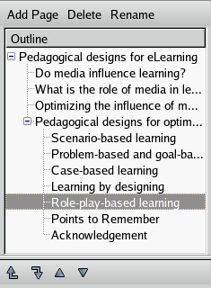
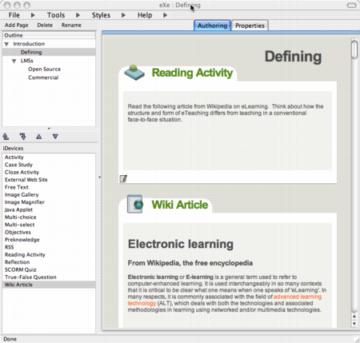
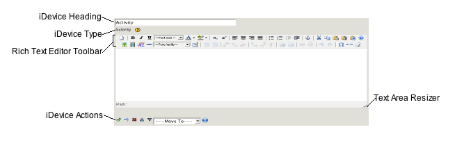
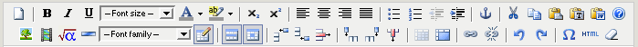
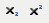
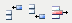
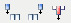
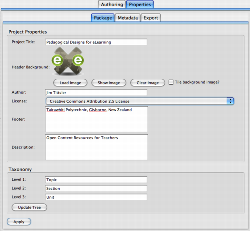
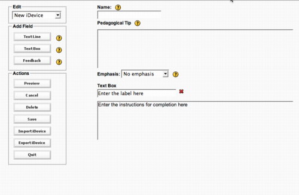

Online manual/Working with eXe
Contents |
Working with eXe
eXe has been designed to provide users with the flexibility to develop learning content or learning resources in a way that best suits their personal development processes. Some users for example, may prefer to outline the structure of their content before settling the detail of their content. Others might prefer to put in the detail and structure the content once they know the detail they have to cover.
For eXe users that prefer to design the structure of their content first, the Outline pane will enable you to construct an outline or course design that reflects your own preferred hierarchy and even taxonomy, e.g. topics-sections-units, or books - chapters - notes, etc. The outline structure can be easily adapted as content detail is added.
The iDevice (instructional Device) pane is a collection of structural elements that describe learning content and activities. Examples of these include, objectives, pre-knowledge, case studies, or even free text. Learning content is created by selecting iDevices from the iDevice menu and entering your learning content. A learning resource may consist of as few or as many iDevices as needed to deliver the learning content. New iDevices are in development and recommendations for additional iDevices are constantly sought from the wider learning community. Users can include images, math equations, and multi-media (including the majority of current video formats and mp3) - or attach any other resource - into any iDevice's rich-text fields.
If the iDevice you need is not amongst those generic iDevices listed in the iDevice pane you may be able to create your own new iDevice using the iDevice Editor. This is covered later in the manual.
Once authoring is complete content can be exported using eXe’s Export facility. Content can be saved as a self contained web site for publishing to a web server, or as a SCORM Content Package or IMS Content Package, which should enable the resource to be imported into most SCORM compliant Learning Management Systems (LMS). eXe also includes exports for flat text files as well as an experimental iPod notes format export. eXe pages also format well for the printing of resources.
eXe Menu Options
The Menu contains the following options: File, Tools, Styles, and Help. These are described briefly below:
| File | contains options for Opening previous content you have worked on, Saving content, Exporting content as a Web Site or SCORM package, or Merging a previously authored package into the package you are currently working on |
| Tools | launch the iDevice editor, or select the language (preferences) that you would like to use eXe in, or refresh the display (if eXe seems to stop responding) |
| Styles | select a style for your content |
| Help | information to report a bug or learn more about eXe |
About the Authoring Workspace
eXe's authoring workspace is made up of two work areas. The left sidebar contains the tools that content authors can use to enter and organise content. While the authoring space behaves as a drafting board where content authors using the iDevice tools can edit and view content. Currently, a properties tab is also accessible in this work space. The properties tab is designed to enable content authors to define basic metadata and taxonomy for the project as well as add header graphics and a title.
eXe Sidebar
Located at the far left of the screen is the eXe sidebar containing the Outline and iDevice panes.
The basic tree type structure allows users to add content pages (branches, children or nodes) to the trunk (Home page). Multiple levels can be added under this structure however guidelines for good content design suggest a fairly flat structure to be ideal for most learning content.
The Outline Pane

The Outline tool set allows you to define the structure your project will take. This is particularly useful for large or complex projects that contain many parts or topics. The Outline pane uses a tree structure to organise related pages. This first page or node is the Home page. This is the top level page and will always display as your project's home page when published.
| Function | Description |
| Home Page | The Home page is the first page displayed when the project is exported to the web or an LMS. This is a parent page and additional child level pages can be added under this page. |
| Adding pages | To add additional pages select the parent node by highlighting the parent level and click the <Add Page> button. |
| Delete pages | To delete a page, select the page you want to delete and click the delete button. A dialogue message displays to check this action. Click OK to continue. |
| Renaming pages | Select the page you want to rename and click the rename button or double click on the node. A dialogue message prompts you to enter the new name. Enter the name and click OK. |
| Extracting & Merging pages | Merging pages allows you to take an elp file and merge the content of that file into another elp file, or to take a page from an elp file and extract it to create a new elp.
To insert a file select the node you wish to insert the content into then select Merge, Insert Package from the File menu. Alternately, you can right-click on a node and select Insert Package. The Browser dialogue is displayed. Browse to the elp file you want to insert and click Open. The new file content will now appear in your open elp file. To extract a node, select the node from your open elp file, select File, Merging, Extract Package (or right-click). A save dialog is displayed. Enter a file name for the node you are extracting and click Save. A confirmation message will be displayed. |
| Promote/Demote arrows |
The promote/demote arrows are located beneath the outline pane. Selecting a node and clicking on one of the arrows will change the position of that node with the outline structure. |
The iDevice Pane
The iDevice (instructional device) pane is a collection of structural elements that describe learning content. Examples of these include, objectives, pre-knowledge, case studies, free text. Learning content is created by selecting iDevices from the iDevice menu and entering your learning content.
iDevice Descriptions
| iDevices | Description |
| Activity | An activity can be defined as a task or set of tasks a learner must complete. Provide a clear statement of the task and consider any conditions that may help or hinder the learner in the performance of the task. |
| Case Study | A case study is a story that conveys an educational message. A case study can be used to present a realistic situation that enables learners to apply their own knowledge and experience to. When designing a case study you might want to consider the following:
|
| Cloze Activity | Cloze activities prompts learners with a piece of text with significant phrases or words missing. Learners demonstrate their knowledge and understanding of the concepts presented in the text by filling in the missing phrases or words. A useful device for testing reading comprehension and language skills. |
| External website | The external website iDevice allows you to attach an external website url to your content. This feature allows learners to browse the external website without the need to open a new browser window. |
| Free Text Area | The majority of a learning resource will be establishing context, delivering instructions and providing general information. This provides the framework within which the learning activities are built and delivered. |
| Image Gallery | The gallery iDevice allows you to upload and label multiple images. |
| Image Magnifier | The image magnifier allows the learner to view parts of an image in a magnified state. |
| Java applet | This is iDevice that allows users to load simple java applets into the eXe content. |
| Multi-choice Question | Although more often used in formal testing situations MCQ’s can be used as a formative testing tool to stimulate thought and discussion on topics students may feel a little reticent in responding to.
When designing a MCQ test consider the following:
Avoid grammar, language and question structures that might provide clues. |
| Multi-select Question | This iDevice provides the ability to choose more then one correct response to a question. |
| Objectives | Objectives describe the expected outcomes of the learning and should define what the learners will be able to do when they have completed the learning tasks. |
| Preknowledge | Prerequisite knowledge refers to the knowledge learners should already have in order to be able to effectively complete the learning. Examples of pre-knowledge can be:
|
| RSS | The RSS iDevice allows users to import a snapshot of RSS content into your authoring environment where it can then be edited. This iDevice requires that the author be connected to the internet. |
| Reading Activity | Provide learners with structure to their reading activity. This helps put the activity in context for the learner. It is also important to correctly reference any reading materials you refer to as this models best practice to the learners. Not always essential if covered in the course content but providing feedback to the learner on some of the main points covered in the reading may also add value to the activity. |
| Reflection | The Reflection iDevice allows you to pose a question for the learner to consider of set an activity for learners to complete before receiving some guidance by clicking on the Feedback button. |
| SCORM Quiz | The SCORM Quiz iDevice bundles questions to form a quiz assessment. This assessment is then managed by the Learning Management System (LMS) to enable scoring. |
| True/False Question | True-false questions present a statement that requires the learner to make a determine whether or not the statement is true or not. |
| Wiki article | The wiki article idevice takes a snap shot of an article and embeds it into your eXe content. This iDevice requires that the author be connected to the internet. Changes made to the article will not automatically be updated to Wiki so changes made on your local machine to the wiki content in your content should be submitted back to the wiki where appropriate. |
Authoring Window

The authoring window (to the right of the screen) displays the editable areas in the iDevice templates selected. Various editing tools are available to assist in the development of text.
Adding an iDevice

Formatting content using Rich Text Editor
Using the iDevice rich text editor you enter your content as you would if you were using standard word processing type applications. Formatting of your content at this stage is relatively simple and the editing toolbar located above each editable frame provides some basic formatting, searching and linking functionality.

| Clear field content | |
| Font styles: bold, italic, and underlined | |
| Font size selection menu | |
| Font family selection menu | |
| Text and text background colors | |
|  | Font styles: subscript and superscript |
| Text alignment: left, center, right, and full | |
| Lists: unordered and ordered | |
| Text margins: outdent and indent | |
| Anchor: insert an anchor for internal linking (via the chain text-link button); only supported in exports of type Web Site
See Including more Anchors for internal Navigation Links for more details | |
| Cut and copy to, and paste from, clipboard | |
| Paste clipboard as text, and paste from Word (to cleanup Word formatting) | |
| Help button for TinyMCE, the rich text editor | |
| Image: insert an image into your content (to link to a URL or to embed a file); or edit its properties
See Including Images for more details | |
| Media: insert a media clip into your content (to link to a URL or to embed a file); or edit its properties
See Including Multi-Media, Audio and Video for more details | |
| Math: generate or edit an embedded math image using LaTeX (see mimetex's LaTeX tutorial )
See Including Mathematical Graphics (using LaTeX) for more details | |
| Insert an advanced horizontal rule | |
| Insert a table | |
| Table properties: row and cell | |
|  | Table rows: insert row before or after, or delete |
|  | Table columns: insert column before or after, or delete |
| Table: split and merge | |
| Text Link: insert a link (to an external URL, an internal anchor, or to embed an attachment file); or edit its properties; or remove the link (via the broken-chain button)
See Including Links and Attachments for more details | |
| Undo and Redo edits or formatting | |
| Insert a custom character symbol | |
| HTML raw source editor (advanced users only) | |
| Remove formatting from selected text |
iDevice Control Buttons
Each iDevice comes with a standard set of iDevice control buttons. These controls are described below.
Green check mark
Each time you enter content into a field you must click on the check mark. This records the content in the iDevice and switches the view to preview mode. Note This does not save your work!!!
Blue undo arrow
By clicking on the blue undo arrow, you will undo any changes that might have made to the iDevice since opening it for edit. Please note that some iDevice editing functions (for example, Add or Remove a Question or Option in any of the quizzing iDevices) do not support an undo, and will result in the arrow appearing as: 
Red X
By clicking on the red X you will delete the iDevice and any content entered.
Up and down arrows
The up and down arrows allow you to change the order of the iDevices displayed on your screen.
Move To menu
You can move iDevices containing content between and within nodes. This is done by opening the drop down menu and selecting the node you wish to move it to.
Edit iDevice
The page and pencil icon that appears in preview mode beneath each iDevice enables you to edit that particular iDevice. This is done by clicking on the icon which opens the iDevice in edit mode.
Properties Tab

The properties tab allows capturing relevant project related data. Within this tab you will find three sub-tabs created to collect the data.
The Package tab allows you to record basic project information like project title, author details and taxonomy. Authors can now also add a header graphic to a package which will display in the title area of the screen page.
The Metadata tab allows you to enter details which may prove useful for searching at a later stage. eXe currently supports Unqualified Dublin Core for IMS Content Packages. That same metadata is wrapped in a subset of the IMSLRM (which itself is a subset of the IEEE-LOM) for SCORM 1.2 exports.
If the metadata entries are not filled in, eXe uses the package title, author, and description as fallback values. If you don't set the package title either, eXe will default to using the package filename.
| Field | IMS Content Package | Scorm 1.2 |
| Title | dc:title | general.title |
| Creator | dc:creator | lifecycle.contribute (role=Author) Note: should be entered with VCARD tag such as FN:Joe Author or ORG:Big University |
| Subject | dc:subject | unused |
| Description | dc:description | general.description |
| Publisher | dc:publisher | lifecycle.contribute (role=Publisher) Note: should be entered with VCARD tag such as FN:Joe Author or ORG:Big University |
| Contributors | dc:contributors | lifecycle.contribute (role=Unknown) Note: should be entered with VCARD tag such as FN:Joe Author or ORG:Big University Note: only one allowed. |
| Date | dc:date | used for lifecycle.contribute dates |
| Type | dc:type | unused |
| Format | dc:format | technical.format |
| Identifier | dc:identifier | general.catalogentry |
| Source | dc:source | unused |
| Language | dc:language | general.language |
| Relation | dc:relation | relation.resource |
| Coverage | dc:coverage | unused |
| Rights | dc:rights | rights.description |
The Export tab allows you to select additional SCORM export features. SCORM features will be listed in this tab as they are developed and can be selected by activating the relevant checkboxes.
In eXe 1.0, the only feature available is for the addition of next and previous links to be made for SCORM exports. This feature adds next and previous page navigation buttons to each page when viewed through an LMS browser. At present this feature has been tested with the Moodle and Interact LMS. It relies on special functionality in the LMS and so should not be expected to work in all cases.
Menus and Toolbars
Loading files
Native eXe files are held as .elp files. When authoring existing files in eXe a file must be loaded to the eXe before they can be edited. eXe files are saved as .elp extensions (see Chapter 5 File Management for more detail).
Loading .elp files to eXe Select <file, open> in the toolbar. The <select a file> window opens allowing authors to browse to the folder or file sought. Select the file by double clicking on the file or selecting the file with a single click and clicking <open>. The file will open in the eXe authoring window.
Save Content
IMPORTANT NOTE
You must use the procedure described below to save your .elp file. The green checkmark closes edit mode for each idevice but does not save your package. Any edits made to idevices will be lost if not manually saved using the procedure outlined below.
To save authored content
Select <save> from the <file> menu in the toolbar. The <select a file> window opens allowing authors to enter a file name for the project. A dialogue message is displayed confirming the location of the saved file.
Exporting Content
Content created in eXe can be exported as a web package ready for publishing to a web server, as a SCORM 1.2 package for delivery to a SCORM compliant LMS, an IMS Content Package, a Single Web Page suitable for printing, a plain text file for display on mobile devices, or iPod Notes files.
To export a package
For the Web
Select <export> from the <file> menu in the toolbar. Select <Web Site> and then choose either <Self-Contained Folder> or <Zip File>. If you select <Self-Contained Folder> select the folder you want to export to by selecting a folder from the <browse to folder> window, or create a new folder and click<OK>.
A new folder can be created to store files by clicking on the <make new folder> button in the <browse to folder> window. Label the newly made folder and click <OK>.
You can also export your web site as a zip file. This will help if you need to email your site to a webmaster, or if you have an LMS that can unzip files itself (like Moodle).
For SCORM / IMS Content Package Select <export> from the <file> menu in the toolbar. Select SCORM 1.2 or IMS Content Package. The <export SCORM package as> window will be displayed and you will be prompted for the package title. Enter the package title and click <save>. A similar process occurs for the IMS Content Package export. Packages exported this way are saves as .zip files. You do not need to unzip these files in order to import into an LMS.
Preferences
The Preferences dialog currently enables you to change the language in which the eXe interface is rendered. Select a language from the pulldown list and hit OK to change to another language. Your selection will be remembered when you restart eXe.
Styles
eXe currently offers seven page styles. Each style combines a different colour theme and icons appropriate to a theme. Styles are selected from the <Styles> menu on the toolbar.
iDevice Editor and iDevice tools

The iDevice Editor allows you to design your own iDevices.
| Menu Item | Description |
| Edit Drop-down Menu | The Edit drop-down allows you to edit an existing iDevice or create a new iDevice.
Note: Not all iDevices can be edited, only those with simple functionality are editable. |
| Menu Item | Description |
| Text Line | Add a single text line field |
| Text Box | Add text box field. This will allow multiple lines of text |
| Feedback | Add a feedback box that is activated with a show hide button |
| Menu Item | Description |
| iDevice Editor Actions Pane | The Actions pane provides a range of editing functionality. |
| Preview Button | The preview button allows you to preview the layout of the iDevice. Selecting preview displays the field items chosen with any tips, hints and labels assigned. In preview mode the preview button changes to Edit. Clicking on Edit returns you to the edit mode where you can continue to edit the iDevice. |
| Cancel Button | The cancel button is used with existing iDevices and cancels any change made in the current editing instance. All the origninal fields remain only fields added in this new editing instance will be cancelled. |
| Delete Button | The delete button removes the selected iDevice from the iDevice list. |
| Save Button | The save button saves changes to existing iDevices. |
| Import iDevice Button | The import button allows you to import an iDevice someone has exported for you. |
| Export iDevice Button | The export button allows you to export the newly created iDevice in a format that can be shared with other resource developers. |
| Quit | The quit button exits the iDevice editor. |
Creating an iDevice
To create an iDevice
- Select Tools from the toolbar menu and select iDevice Editor. The iDevice editor window will open.
- Enter the device name, author name, and the purpose for the iDevice.
- Enter any pedagological help you might give to other users on how you see the device being used.
- Select the type of emphasis you want to place on the content entered with this idevice. No emphasis means that the content will display as plain text, Some emphasis differentiates the text slight and Strong emphasis highlights the text. By selecting emphasis you will be presented with an icon menu. Click on an icon to attach it to your iDevice. This icon will appear alongside the iDevice title.
- The next step is to build your iDevice by selecting the elements you want to appear in your iDevice. The Add Text Field button provides you with a single line input field. The Add Text Area button gives you a multiple line input field. You can also add a Feedback field (similar to the Case Study iDevice).
- Give each element a label and provide instructions on using each one.
- Click Save. The new iDevice will appear in the iDevices Pane. This iDevice now behaves in the same manner as the other iDevices.
Known Bugs and Issues
We acknowledge that there will be issues that maybe difficult for us to resolve from time to time. Sometimes this will be because building something that doesn't exist means the tools to create it may not have quite caught up with our design ambitions. On the other hand it might just be something we haven't worked out how to fix quite yet. Where this happens we will keep you updated with the bugs and issues we do know about.
Current bugs and issues
- Currently you cannot have more than one SCORM Quiz per node or page. You can however make a SCORM Quiz in each node, there is no limit to how many quizzes you have throughout your resource. We will continue to try to fix this problem but it has been set as a low priority. Ticket No.265
- The eXe file format has changed between versions. Now that version 1.0 has been released, we expect fewer changes. While newer versions of eXe can open old packages, old versions of eXe will not be able to open packages created with newer versions. This means if you are collaborating in authoring a document and sharing .elp files, you all should use the same version of eXe. The package format is compatible across platforms, so there is no problem sharing .elp files between Windows, OS X, and Linux.
- eXe does not do any file locking or transaction control that would allow multiple authors to safely edit the same package at the same time on a shared volume. Instead, each of the authors could work on components of a resource, and then use eXe's Merging... Insert Package feature to build the components into a single package.